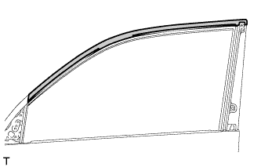
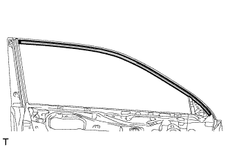
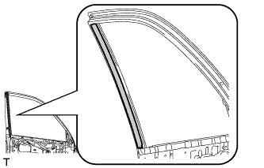

BLACK OUT TAPE (for Front Door) > REMOVAL |
| 1. DISCONNECT CABLE FROM NEGATIVE BATTERY TERMINAL |
| Condition | Waiting Time |
| Vehicle enrolled in safety connect system | 6 minutes |
| Vehicle not enrolled in safety connect system | 1 minute |
| 2. REMOVE FRONT DOOR REAR WINDOW FRAME MOULDING LH |
Remove the front door rear window frame moulding (Click here).
| 3. REMOVE NO. 1 BLACK OUT TAPE LH |
|  |
| Item | Temperature |
| Vehicle Body | 40 to 60°C (104 to 140°F) |
| Black Out Tape | 20 to 30°C (68 to 86°F) |
Pull back an edge of the black out tape and pull it parallel to the vehicle body to remove it.
| 4. REMOVE FRONT DOOR OUTSIDE STRIPE LH |
|  |
| Item | Temperature |
| Vehicle Body | 40 to 60°C (104 to 140°F) |
| Outside Stripe | 20 to 30°C (68 to 86°F) |
Pull back an edge of the front door outside stripe and pull it parallel to the vehicle body to remove it.
| 5. REMOVE LOWER FRONT DOOR OUTSIDE STRIPE LH |
|  |
| Item | Temperature |
| Vehicle Body | 40 to 60°C (104 to 140°F) |
| Outside Stripe | 20 to 30°C (68 to 86°F) |
Pull back an edge of the lower front door outside stripe and pull it parallel to the vehicle body to remove it.